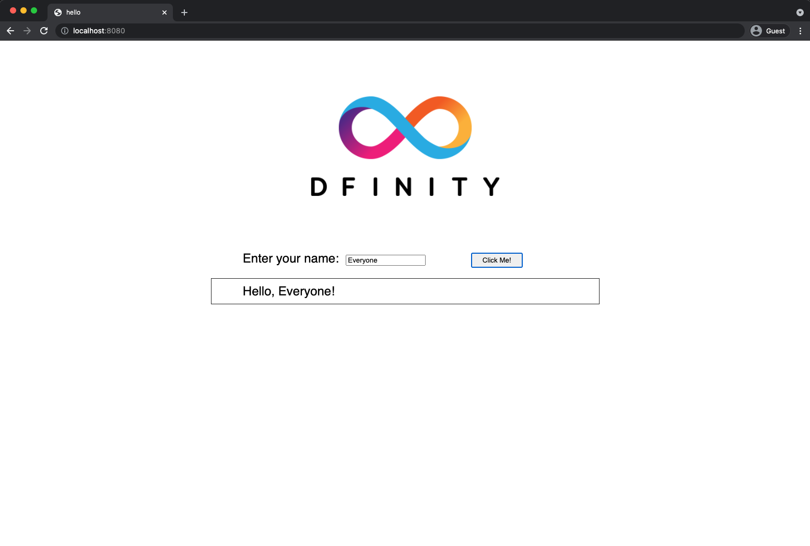

本地开发
这个 快速入门 场景假设您是第一次安装 {sdk-short-name} 并希望在*本地容器执行环境*中运行容器智能合约，而不是将其部署到 Internet Computer 区块链。
首先，让我们构建和部署一个简单的 Hello 容器，它只有一个功能——称为 greet。 greet 函数接受一个文本参数并返回带有类似于 Hello, everyone! 的问候的结果，如果您使用命令行运行容器，则在终端中或在 HTML 页面中，如果您在浏览器中访问容器。
开始之前
在下载并安装此版本的 {sdk-short-name} 之前，请验证以下内容：
-
您有互联网连接并可以访问本地 macOS 或 Linux 计算机上的 shell 终端。
目前，{sdk-short-name} 仅在具有 macOS 或 Linux 操作系统的计算机上运行。
-
如果你想在你的项目中包含用于前端开发的默认模板文件，你已经安装了
node.js。
下载安装
您可以直接从本地计算机上的终端 shell 下载最新版本的 DFINITY Canister Software Development Kit (SDK)。
要下载和安装：
-
在本地计算机上打开终端 shell。
例如，打开 Applications、Utilities，然后双击 Terminal 或按 ⌘+spacebar 打开 Search，然后键入
terminal。 -
通过运行以下命令下载并安装 {sdk-short-name} 包：
sh -ci "$(curl -fsSL https://sdk.dfinity.org/install.sh)"此命令提示您在本地计算机上安装 DFINITY 执行命令行界面 (CLI) 及其依赖项之前阅读并接受许可协议。
-
输入
y并按 Return 继续安装。该命令显示有关正在本地计算机上安装的组件的信息。
验证 SDK 是否可以使用
如果安装脚本运行时没有任何错误，那么您开始开发在 Internet Computer platform 上运行的程序所需的一切都将在您的本地计算机上可用。
要验证 SDK 是否可以使用：
-
在你的本地计算机上打开一个终端shell，如果你还没有打开的话。
-
通过运行以下命令，检查你是否安装了 DFINITY 执行命令行界面 (CLI)，并且`dfx` 可执行文件在你的 PATH 中可用。
dfx --version该命令显示
dfx命令行可执行文件的版本信息，类似于以下内容：dfx 0.9.2
-
通过运行以下命令预览其他`dfx`命令行子命令的使用信息。
dfx --help该命令显示`dfx`父命令及其子命令的使用信息。
Create a new project
Internet Computer 上的 Dapps 以 projects 开始。
您可以使用 dfx 父命令及其子命令创建项目。
对于本教程，我们将从默认示例 dapp 开始，以说明使用项目中的启动文件创建 dapp。
当您创建一个新项目时，dfx 命令行界面将默认项目目录结构添加到您的工作区。 我们介绍了构成项目目录的模板文件Explore the default project tutorial.
为您的第一个应用程序创建一个新项目:
-
如果您还没有打开一个终端shell，请在您的本地计算机上打开一个终端shell。
-
通过运行以下命令创建一个名为
hello的新项目：dfx new hellodfx new hello命令为您的项目创建一个新的hello项目目录、模板文件和一个新的helloGit 存储库。如果您使用不同的项目名称而不是
hello，请记下您使用的名称。 在这些说明中，您需要使用该项目名称代替hello项目名称。 -
通过运行以下命令切换到您的项目目录：
cd hello
开始本地部署
在构建您的第一个项目之前，您需要连接到本地容器执行环境。 作为最佳实践，此步骤要求您打开两个终端 shell，以便您可以在一个终端中启动并查看容器执行操作并在另一个终端中管理您的项目。
准备本地容器执行环境：
-
在本地计算机上打开一个新的第二个终端窗口或选项卡。
-
如有必要，导航到项目的根目录。
您现在应该在两个终端中打开 两个终端，并将您的 项目目录 作为您的 当前工作目录。
-
通过运行以下命令，在您的第二个终端中的计算机上启动本地容器执行环境：
dfx start根据您的平台和本地安全设置，您可能会看到显示的警告。 如果系统提示您允许或拒绝传入的网络连接，请单击 Allow。
-
将显示容器执行操作的终端窗口保持打开状态，并将焦点切换到您在其中创建新项目的第一个终端窗口。
您在不显示容器执行操作的终端中执行其余步骤。
注册、构建和部署应用程序
连接到本地容器执行环境后，您可以在本地注册、构建和部署 dapp。
要在本地部署您的第一个 dapp：
-
如果需要，请检查您是否仍在项目的根目录中。
-
确保
node模块在您的项目目录中可用，如果需要，通过运行以下命令：npm install有关此步骤的更多信息，请参阅确保节点在项目中可用。
-
通过运行以下命令注册、构建和部署您的第一个 dapp：
dfx deploydfx deploy命令输出显示有关它执行的操作的信息。 例如，这一步注册了两个标识符——一个用于`hello主程序，一个用于hello_assets`前端用户界面——以及类似以下的安装信息：在本地网络上创建钱包容器。 用户“默认”的“本地”网络上的钱包容器是"rwlgt-iiaaa-aaaaa-aaaaa-cai" 部署所有容器。 创建容器... 创建容器“你好”... 使用容器 ID 创建的“hello”容器：“rrkah-fqaaa-aaaaa-aaaaq-cai” 正在创建容器“hello_assets”... 使用容器 ID 创建的“hello_assets”容器：“ryjl3-tyaaa-aaaaa-aaaba-cai” 建造容器... 构建前端... 安装容器... 在本地网络上创建 UI 容器。 “本地”网络上的 UI 容器是“r7inp-6aaaa-aaaaa-aaabq-cai” 使用 canister_id rrkah-fqaaa-aaaaa-aaaaq-cai 安装容器 hello 的代码 使用 canister_id ryjl3-tyaaa-aaaaa-aaaba-cai 安装容器 hello_assets 的代码 将我们的身份（默认）授权给资产容器... 正在将资产上传到资产容器... /index.html 1/1 (573 bytes) /index.html (gzip) 1/1 (342 bytes) /index.js 1/1 (605692 bytes) /index.js (gzip) 1/1 (143882 bytes) /main.css 1/1 (484 bytes) /main.css (gzip) 1/1 (263 bytes) /sample-asset.txt 1/1 (24 bytes) /logo.png 1/1 (25397 bytes) /index.js.map 1/1 (649485 bytes) /index.js.map (gzip) 1/1 (149014 bytes) 部署的容器。
但是，如果您创建了一个不同名称的项目，您的容器名称将匹配您的项目名称，而不是
hello和hello_assets。您还应该注意*第一次部署*，
dfx创建一个default身份和一个由您的default身份控制的本地燃料费钱包。 燃料费钱包是一种特殊类型的容器，可让您将cycles 转移到其他容器。要在本地部署此示例 dapp，您无需了解有关您的默认开发人员身份、使用燃料费钱包或管理燃料费的任何信息。 我们稍后会介绍这些主题，但现在，请注意这些主题是自动为您创建的。
-
通过运行以下命令调用
hello容器和预定义的greet函数：dfx canister call hello greet everyone让我们仔细看看这个示例命令：
-
dfx canister call命令要求您指定容器名称和调用方法或函数。 -
hello指定要调用的 canister 的名称。 -
greet指定要在hello容器中调用的 函数 的名称。 -
everyone是要传递给greet函数的文本数据类型参数。
但是请记住，如果您创建了一个不同名称的项目，容器名称将与您的项目名称匹配，您需要修改命令行以匹配您使用的名称，而不是
hello。 -
-
验证命令是否显示
greet函数的返回值。例如：
("Hello, everyone!")
Test the dapp front-end
现在您已经验证了您的 dapp 已经部署并使用命令行测试了它的操作，让我们验证您是否可以使用 Web 浏览器访问前端。
-
使用
npm start启动开发服务器 -
打开浏览器。
导航到此 URL 会显示一个简单的 HTML 页面，其中包含一个示例资产图像文件、一个输入字段和一个按钮。 例如：
+

-
键入问候语，然后单击 Click Me 以返回问候语。
例如：

停止本地容器执行环境
在浏览器中测试应用程序后，您可以停止本地容器执行环境，使其不再在后台继续运行。
停止本地部署：
-
在显示开发服务器的终端中，按 Control-C 中断开发服务器进程。
-
在显示容器执行操作的终端中，按Control-C中断本地网络进程。
-
通过运行以下命令，停止在本地计算机上运行的本地容器执行环境：
dfx stop
下一步
本_快速入门_仅涉及几个关键步骤，介绍了开发您自己的 dapp 的基本工作流程。 您可以在整个文档中找到更详细的示例和教程，以帮助您了解如何使用 Motoko 以及如何开发 dapp 以在 Internet Computer 区块链上运行。
以下是关于下一步去哪里的一些建议：
-
Tutorials 探索使用本地容器执行环境构建简单的 dapp。
-
将 ICP 代币转换为燃料费 如果您有 ICP 代币想要转换为燃料费以使您能够将 dapp 部署到 Internet Computer 区块链。
-
链上部署 如果你有燃料费并准备将应用程序部署到 Internet Computer 区块链主网。
-
什么是 Candid？ 了解 Candid 接口描述语言如何实现服务互操作性和可组合性。
-
Motoko at-a-glance 了解使用 Motoko 的特性和语法。